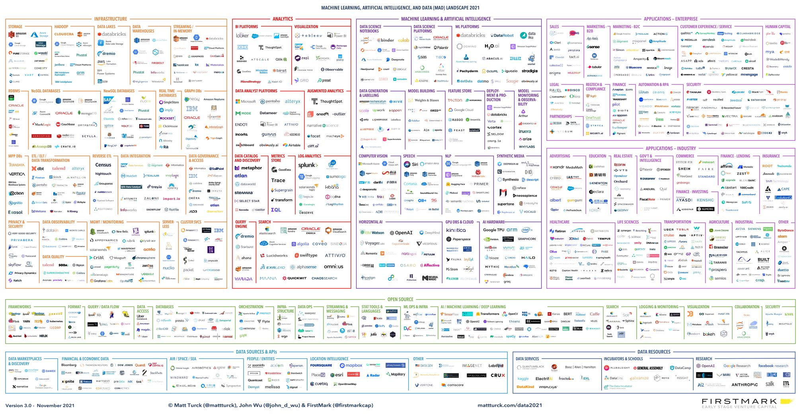

AXA Group Data Management Team, DECEMBER, 2023
Technologies are evolving very rapidly. The list provided here is just examples. In case of RFI/RFP, please check IT advisor firms such as Garner, Forrester, ThoughtWorks, and also connect with AXA Smart Data Circle and data architects in AXA to get return on experience.
A very large range of BI and anlytics technologies exist on the market.
.
Technologies examples for Machine Learning Platforms: Dataiku, Alteryx, Databricks, AWS Sagemaker, Azure ML, Datarobot ; cf. Dataiku vs Alterix vs Sagemaker vs …, Databricks vs Snowflake.
| Name | URL |
|---|---|
| Databricks Data Lakehouse | https://www.databricks.com/product/data-lakehouse |
| Snowflake | https://www.snowflake.com |
| Teradata | https://www.teradata.com |
| Microsoft Azure Synapse | https://azure.microsoft.com/products/synapse-analytics |
| Google Big Query | https://cloud.google.com/bigquery |
| Amazon AWS RedShift | https://aws.amazon.com/redshift |
| Name | URL |
|---|---|
| Databricks MLFlow | https://www.databricks.com/product/managed-mlflow |
| Amazon AWS SageMaker | https://aws.amazon.com/sagemaker |
| Google Vertex AI | https://cloud.google.com/vertex-ai |
| Azure Machine Learning | https://azure.microsoft.com/en-us/products/machine-learning |
| SAS Institute Machine Learning | https://support.sas.com/en/software/machine-learning.html |
| Name | URL |
|---|---|
| Denodo | https://www.denodo.com/en |
| Tibco Data Virtualization (previously Composite Software) | https://www.tibco.com/products/data-virtualization |
| IBM Data Virtualization (Warson Query) | https://www.ibm.com/products/watson-query |
| Starburst (based on Facebook Presto) | https://www.starburst.io |
| Capability | Name | URL |
|---|---|---|
| Time Series Database | InfluxDB | https://www.influxdata.com/ |
| NoSQL Documents | MongoDB | https://www.mongodb.com/ |
| NoSQL Documents | Microsoft Azure CosmosDB | https://learn.microsoft.com/en-us/azure/cosmos-db |
| NoSQL Documents | Amazon AWS DynamoDB | https://aws.amazon.com/pm/dynamodb |
| NoSQL Documents | Google Cloud Datastore | https://cloud.google.com/datastore |
| Search | Solr (built on Apache Lucene) | https://solr.apache.org/ |
| Capability | Name | URL |
|---|---|---|
| Synthetic Data Generator SDK | Faker | https://fakerjs.dev/api/, https://faker.readthedocs.io/en/master/ |
| Data Protection and De-identification SDK | Presidio | https://microsoft.github.io/presidio/ |
| Synthetic Data Generation | Mostly AI | https://mostly.ai/ |
| Persistent Data Masking | Informatica Persistent Data Masking | https://www.informatica.com/products/data-security/data-masking/persistent-data-masking.html |
| Dynamic Data Masking | Informatica Dynamic Data Masking | https://www.informatica.com/products/data-security/data-masking/dynamic-data-masking.html |
| Data Masking Functions | Talend Data Masking | https://help.talend.com/r/en-US/7.3/data-privacy/data-privacy-other |
| Privacy Enhancing Technologies | Privitar Privacy Enhancing | https://help.talend.com/r/en-US/7.3/data-privacy/data-privacy-other |
| Privacy Enhancing Technologies | Sarus Privacy Enhancing | https://www.sarus.tech/product/technology |
| Automated Labelling & Threats Detection | Microsoft Purview | [https://www.microsoft.com/en-us/security/business/microsoft-purview) |
| Automated Labelling & Threats Detection | Amazon Macie | [https://aws.amazon.com/macie/) |
“A data clean room provides aggregated and anonymized user information to protect user privacy, while providing advertisers with non-personally identifiable information (non-PII) to target a specific demographic and for audience measurement.” – TechTarget.com
| Name | URL |
|---|---|
| Habu Data clean room | https://habu.com |
| Databricks Data clean room | https://www.databricks.com/blog/2022/06/28/introducing-data-cleanrooms-for-the-lakehouse.html |
| Snowflake Data clean room | https://quickstarts.snowflake.com/guide/build_a_data_clean_room_in_snowflake_advanced |
Master data management tools offer IT functions to enable data consolidation, data stewardship, data servicing, etc. Some technologies are oriented to support firstly the central repository. For others, the primary focus is on party data consolidation from multiple data sources and identity resolution.
| Name | URL |
|---|---|
| Informatica MDM | https://www.informatica.com/products/master-data-management.html |
| IBM InfoSphere MDM | https://www.ibm.com/fr-fr/products/ibm-infosphere-master-data-management |
| Tibco EBX | https://www.tibco.com/products/tibco-ebx-software |
| Semarchy | https://www.semarchy.com |
| Stibo Systems | https://www.stibosystems.com |
Gartner: “A customer data platform (CDP) is a software application that supports marketing and customer experience use cases by unifying a company’s customer data from marketing and other channels. CDPs optimize the timing and targeting of messages, offers and customer engagement activities, and enable the analysis of individual-level customer behavior over time.”
Customer Data Platforms provides “all-in-one” services that cover not only party/customer data management (identity resolution, privacy controls, etc.), but also marketing requirements for data collection, behavioral data creation, customer targeting and personalization.
| Name | URL |
|---|---|
| Tealium CDP | https://tealium.com/solutions-single-customer-view |
| Amperity | https://amperity.com |
| Treasure Data | https://www.treasuredata.com |
| Adobe Real-Time CDP | https://business.adobe.com/products/real-time-customer-data-platform/rtcdp.html |
| Salesforce CDP | https://www.salesforce.com/products/marketing-cloud/customer-data-platform |
| Bloomreach | https://www.bloomreach.com/en/products/engagement |
| Informatica CDP | https://www.informatica.com/products/customer-data-platform.html |
Examples: Snowplow.
| Name | Capability | URL |
|---|---|---|
| Data Hub Project (Open Source) | Open Metadata | https://datahubproject.io |
| Collibra | Data Governance | https://www.collibra.com |
| Atlan | Data Catalog | https://atlan.com |
| Informatica Enterprise Data Catalog | Data Catalog | https://www.informatica.com/products/data-catalog |
| Talend Data Catalog | Data Catalog | https://www.talend.com/products/data-catalog |
Several tools exist on the market, from standalone tools specialized in specific area (e.g.; API design) to enterprise architecture and modeling repositories. Few examples: SAP Power Designer, Innovator for Information Architects, Hackolade, Visual Paradigm.
Expose APIs
Technology examples: Google Apigee, Broadcom Layer7, Salesforce MuleSoft, Software AG mediator
Expose services and manage service consumption (publish/subscribe)
Technology examples: Software AG webMethods, Salesforce MuleSoft
Store data events and process data events at big data scale
Technology examples: Kafka, AWS Kinesis, Azure Event Hub + Azure Event Streaming
Data consolidation (multi-sources), data synchronisation in batch mode, data migration.
Technology examples: Informatica Data Integration, Talend Data Integration
Data loader pulls raw data from a variety of data sources, systems, and SaaS applications, then ingests that data into the data warehouse, potentially in real time or near-real time.
Some tools on the market are specialized in this function so thet can be used by a large range of users including non-technical users.
Technology examples: Stitch, StreamSets, Apache NiFi, Fivetran, Qlik Attunity Replicate
Data broadcasting outside of a data lake or data warehouse to operational applications.
Technology examples: Hightouch, Census
Transfer data files from source to destination.
Technology examples: Stonebranch UDM, Axway File Broker (XFB), Cleo, SEEBURGER, Goanywhere
{kind=link}